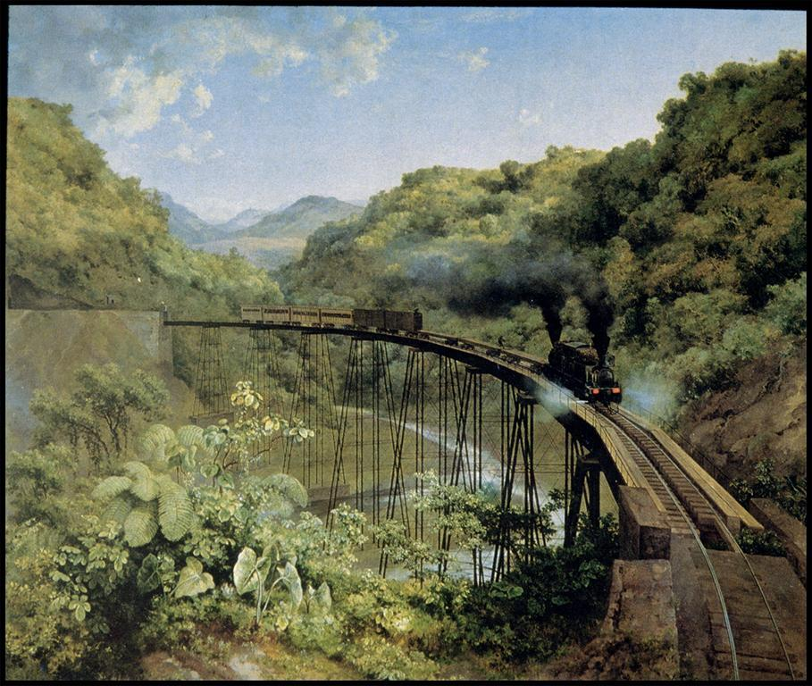
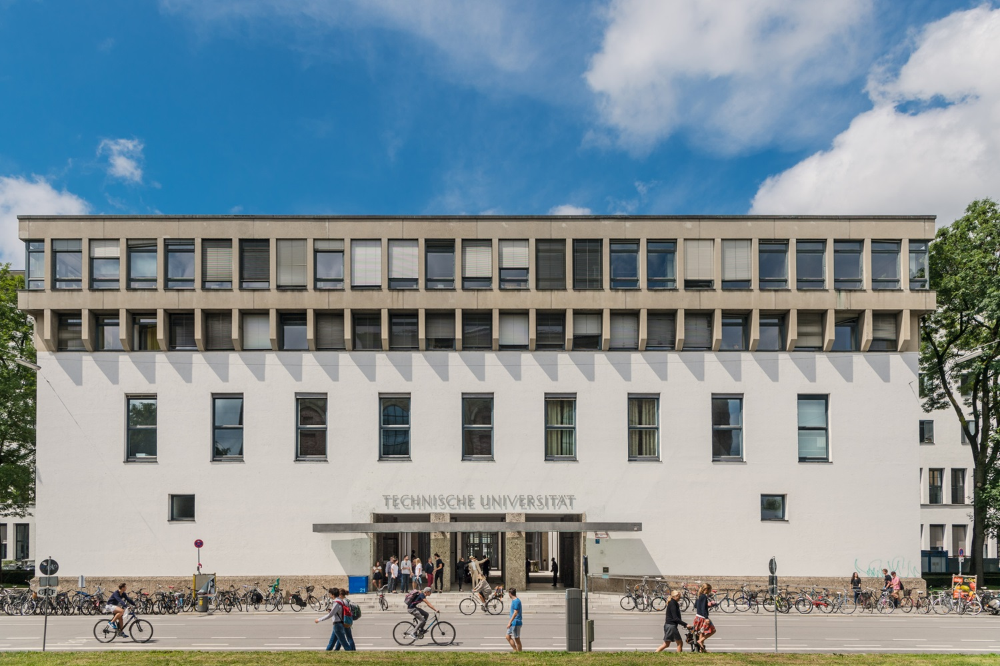
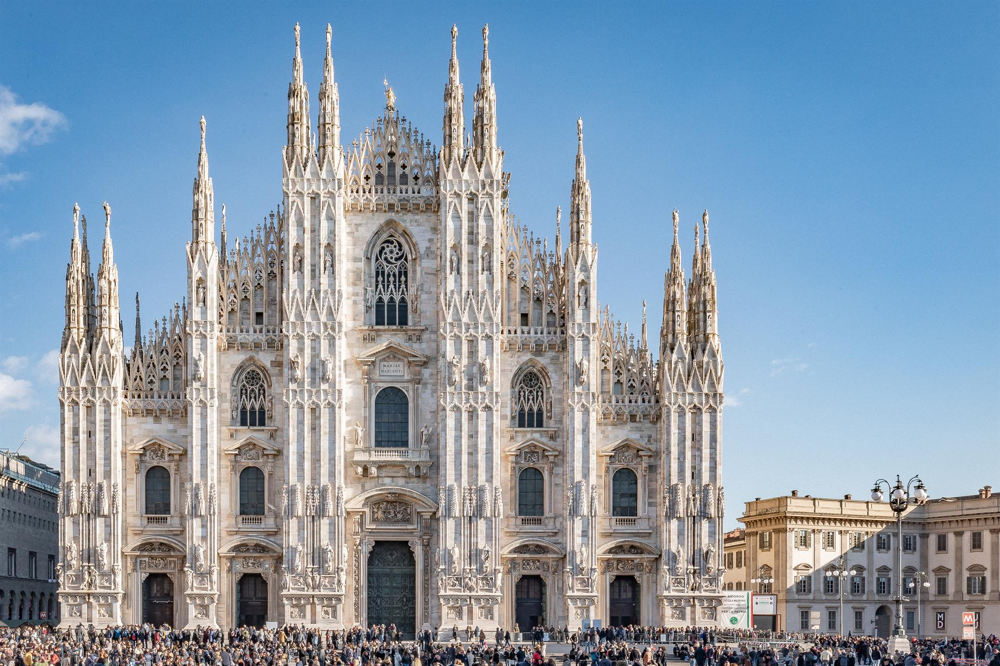
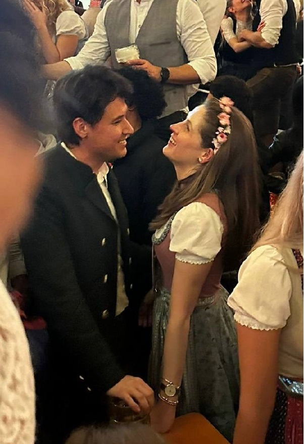

"Construyendo puentes" literally means "building bridges".
"El puente de Metlac" (1881) by José María Velasco. This painting brings memories of my grandfather, Francisco.
¿Porqué un puente?
Dear Erin,
I start with this post where I can share with you a little bit about myself, my mindset and some of the aspects that I believe are characteristic of my personality and define me. And as an opportunity to build a bridge that will allow us to establish a new form of communication.
I believe you can relate some of the things I will describe here to the experience of our conversation at the tent, since we spoke of interesting aspects of personality and our perspectives in life. This conversation is now one of the main reasons I started to have great interest for you and decided to open and share myself. But a broader description of these aspects can contribute to a higher understanding of the personality, which is necessary when establishing a connection with someone new in our lives 😊.
I can then maybe start to let you know some aspects of my character that I like very much: I have discovered that my mindset is build with the main elements of balance, motivation and continuous positivity, and these elements have helped me to develop my person and made me the individual I am today. Balance may be seen for me more as a philosophy of life, while motivation and continous positivy are decisions that I have seen to be effective when facing the challenges of life. Although far from being perfect, I am happy to see myself in the mirror and feel genuinely satisfied and driven to discover more beautiful aspects of this life, while giving my best in the way.
The main element?
Balance is an aspect that I consider crucial. Since there are many elements in life, I try to give my time to develop a selection of them in an careful and even way, often failing in the road 😊 but trying again when necessary. These elements may vary as our priorities in life change, our goals are met, or we discover new interesting aspects in life. Professional development is a pillar of this balance, and it has been always important to me. I work and still working on this for many years of my life, and this is one the reasons why I decided to study in Germany in the first place, and why I continued working here in a profession that I developed while my learning process in Munich. At the same time, a high personal development happened as well, as I was exposed to a completely different culture, land and languages here in Europe, an aspect which I discovered to enjoy very much, and I am happy to keep discovering and experiencing until today.
The Technical University of Munich, the place that brought me to Germany. This place is here.
Balance is also met through other aspects, like hobbies, taking care of our health and sharing ourselves with loved ones. I always knew I had deep inner emotions that I needed to channel in some ways of expression.
For example, to select my profession, I got inspired by my enjoyment when appreciating art in architecture. Although later this evolved in a more technical field as civil engineer field, the beautiful facades or internal structure of ancient constructions amazed me to the point it inspired me to pursue the goal of building something similar. It was clearer when I had interest to sit inside the churches or historical buildings when travelling in old cities here in Europe and I only wanted to read about their history, how they were built, their purpose, their style and how they influenced the people in those places, this also showed me that inherent curiosity I had for such side of life. And not only the buildings, but also what its inside of them: sculptures, paintings, glass works, wood carvings or even the atmosphere one can perceive in religious ceremonies is very rich in its content itself.
And although I never became an artist but an engineer, I am on my way to expand those interests through different activities and I have tried to harness my emotions to other ways of expression, mainly dance and music. I danced often in the last years, particularly salsa and a bit of bachata, which I found to be a liberating exercise for the soul. And by means of learning to play trumpet I am starting to express feelings that flow with the air and are transmitted and received with the help of a song and the content of its lyrics. Too much I have to tell you and share about music and dancing, but maybe this is also adequate for another post since for sure it deserves its own exploration as well 😉. I can only say for now that the Hynotized feeling is very present when I think about you.
Il Duomo di Milano, a place here in Europe with deep meaning to me. Maybe you know, but this place is here.
The aspect of a healthy condition physically and emotionally speaking is more and more important while we grow older, and maybe the best gift to give to our bodies and minds is to be active persons and enjoying the endorphins that come after workouts, dancing, making love or a hiking day. Here, I have my humble goals in development, trying to apply what I believe are adequate methodologies for further growth that can bring benefits in my physical form and mental health, luckily, the efforts pay off in time 💪. If suddenly, strange diseases or other conditions appear, it is not entirely in our control, so better not to worry about it and stick to whatever we can do good for our mind and bodies. I feel particularly lucky here, since I have not experienced life or death situations for me or my family, excepting my brother situation which I explained you in our tent talk. So, I value this fortune as one of the biggest treasures I have and I am everyday thankful for the chance to live with no concerns for now in this aspect.
Time to tip the balance
And with all of the joy of everyday positivism with continuous effort, well learned life lessons and fulfillment of an existence that brings satisfaction when looking back, I come to the point in which I believe it is necessary to talk about the goal of sharing all of these beautiful thoughts and aspects of life that currently come to my mind, and the ones that are yet to come as well. To share them with a person that deserves it and it is able to bring and transform these emotions, feelings and actions to a higher level of interaction, through the creation of a relation based in trust, confidence, support and love.
I consider you very capable of that and I saw these qualities in you, Erin, and that is why I choose to keep sharing my thoughts, ideas, dreams and intentions with you with the hope to be closer and worthy of your consideration.
Even when knowing that initial challenges are present in our current situation, life could not be more interesting than when having the chance to witness how these difficulties are overcomed with every chance we take and every small step forward we give. And I am happy I have the opportunity to demonstrate you that special things may arrive if we are brave enough to walk in the direction of what makes us happy.
In the moment I could see you again before you left to Berlin, I knew you open yourself to this small possibility but happy idea between us, and nothing brings me more happiness, motivation, will of continuous communication and exchange of thoughts that what you gave in those two magic moments when meeting with,
Leonardo.
Erin and Leonardo at the Paulaner tent, Munich-Oktoberfest, October 2024.